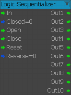
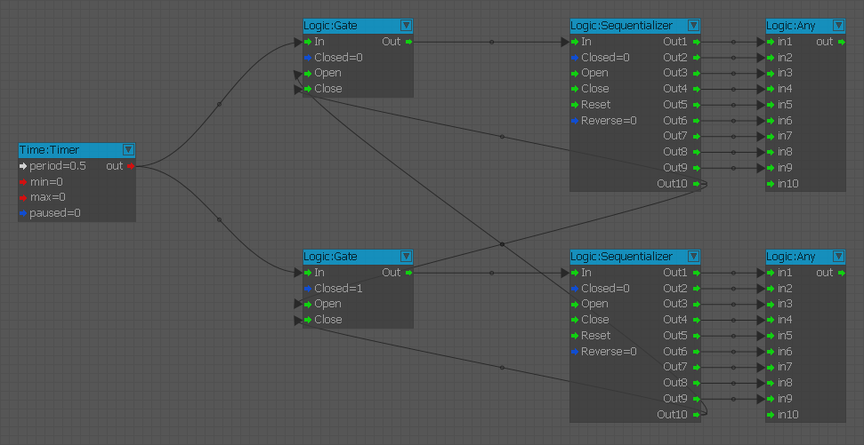
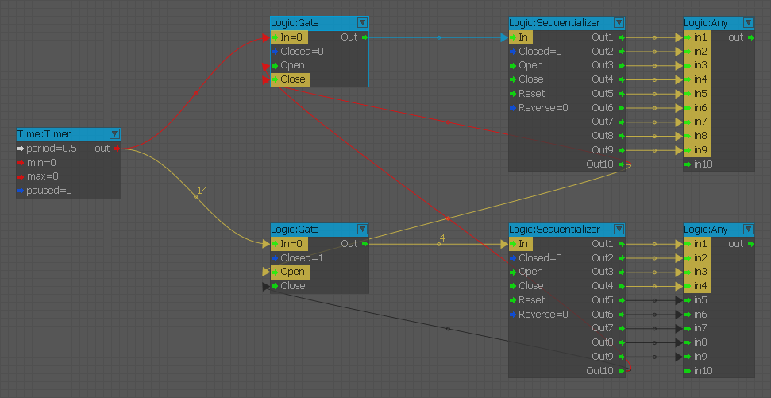

AND
Do logical operation on input pots and outputs result to [out] port. True port is triggered if the result was true, otherwise, the false port is triggered.
All
Triggers the output when all connected inputs are triggered.
Any
Triggers the output when any of the inputs have been triggered.
Blocker
If enable blocks [In] signals, otherwise passes them to [Out].
Condition
Node to route data flow based on a boolean condition. Setting input [Value] will route it either to [OnFalse] or [OnTrue].
ConditionInverse
Node to route data flow based on a boolean condition. Depending on [Condition], either input [True] or [False] will be redirected to [out].
CountBlocker
The value triggered into 'in' is sent to 'out' a maximum number of times.
DeMuliplexer
Pushes the input to the selected (via Index) output port. 3 different modes:
- InputOnly: Only [Input] triggers output.
- IndexOnly: Only [Index] triggers output.
- Both: Both [Input] and [Index] trigger output.
Gate
If closed, blocks [In] signals, otherwise pass them to [Out].
Indexer
Whenever an input port is activated, returns the index of that pot [1-8]. WARNING: Does not account for multiple activations on different pots!
Multiplexer
Selects one of the inputs using the Index and sends it to the output. 3 Different modes!
- IndexOnly: Only [Index] triggers output.
- PortsOnly: Only Port[Index] triggers output.
- Always: Both [Index] and Port[Index] trigger output.
NOT
Inverts [in] port, [out] port will output true when [in] is false, and will output false when [in] is true.
NoSerializeOnce
Triggers only once and passes from activated Input port to output port [Out]. WARNING!! The triggered flag is not serialized on savegame!. This means that even if a previous savegame is loaded after the node has been triggered, the node won't be triggered again.
OR
Do logical operation on input ports and outputs result to [out] port. True port is triggered if the result was true, otherwise, the false port is triggered.
OnChange
Only send [in] value into the [out] when it is different from the previous value.
Once
Triggers only once and passes from activated Input port to output port [Out].
RandomSelect
Passes the activated input value to a random amount [outMin <= random <= outMax] outputs.
RandomTrigger
On each [In] trigger triggers one of the connected outputs in random order.
Sequentializer
On each [In] trigger triggers one of the connected outputs in sequential order.

In this example, we're using the last output from the first Sequentializer node to open/close gates in order to activate the second Sequentializer node. This allows infinite daisy-chaining of sequential events and looped options.
 
XOR
Do logical operation on input ports and outputs result to out port. True port is triggered if the result was true, otherwise, the false port is triggered.